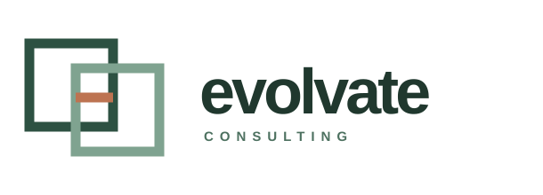
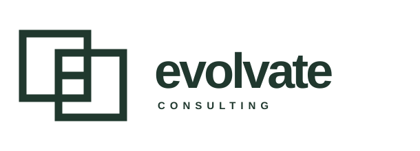
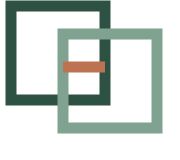

Primary · light

Reversed · dark

One color

Standalone symbol

The two frames represent distinct perspectives meeting in one working view. The short warm line marks the shared decision. Geometry, stroke weight, spacing, and typography have been tightened for a calmer, more consistent identity.




These are refined working vectors. The wordmark currently uses Arial for portability; final brand delivery should convert the chosen lettering to outlines and include a trademark search.